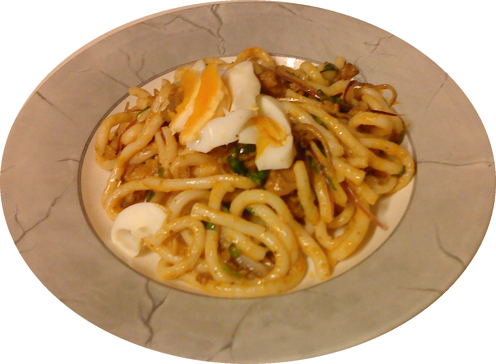

Nan Kyi Thote Recipe

Nan Kyi Thote Ingredients
-
For shredded chicken
- 1 lb. or 3 bone-in skinless chicken legs
- 4 garlic cloves
- ½ inch thick ginger piece
- 2 tbsp. fish sauce
- 3 cup water
-
For chicken curry
- 6 tbsp. vegetable oil
- ½ cup chopped onions
- ½ tsp. turmeric powder
- 2 tsp. paprika
- 1 tbsp. fish sauce
-
For garlic chili oil
- 5 tbsp. dried chili flakes
- 3 tbsp. vegetable oil
- 2 garlic cloves, minced
-
For toasted chickpea powder
- 1 cup chickpea flour, slowly toasted over low heat until golden and raw smell is gone.
-
For each serving of noodle salad
- 6 oz. or ½ cup cooked thick rice noodles / udon noodles
- 2 tbsp. chicken oil, from the curry
- 2 tbsp. chicken meat, from the curry
- 2 tbsp. toasted chickpea flour
- 1 tsp. fish sauce
- 1 tsp. lime juice
- Handful of chopped cilantro
- Slices of hard-boiled egg
- Crispy rice noodles (thin rice noodles deep fried in a very hot oil for 5 seconds)
- Tad of garlic chili flakes
-
For the soup (optional)
- 1 tbsp. chopped green onions
- 1/4 tsp. while pepper
- Fish balls or meatballs of your choice
-
For garlic chili oil
- 5 tbsp. dried chili flakes
- 3 tbsp. vegetable oil
- 2 garlic cloves, minced
-
For toasted chickpea powder
- 1 cup chickpea flour, slowly toasted over low heat until golden and raw smell is gone.
-
For each serving of noodle salad
- 6 oz. or ½ cup cooked thick rice noodles / udon noodles
- 2 tbsp. chicken oil, from the curry
- 2 tbsp. chicken meat, from the curry
- 2 tbsp. toasted chickpea flour
- 1 tsp. fish sauce
- 1 tsp. lime juice
- Handful of chopped cilantro
- Slices of hard-boiled egg
- Crispy rice noodles (thin rice noodles deep fried in a very hot oil for 5 seconds)
- Tad of garlic chili flakes
How to cook Nan Kyi Thote
-
Boiling the chicken
- Boil the chicken over low heat along with garlic, ginger and fish sauce until the chicken shreds easily with a fork, 45 minutes to an hour.
- Remove the chicken from the stock and save the stock for later.
- Shred the meat using forks.
-
Making chicken curry
- Heat the oil and stir-fry the chopped onions and minced garlic until they are evenly brown.
- Add the turmeric powder and paprika.
- Mix in the shredded chicken and coat every piece with oil.
- Season with fish sauce and add 2 tbsp. of chicken stock.
- Cook away all the liquids for about 3-4 minutes.
- Turn the heat off and remove the pan from the stove.
- Tilt the pan and push all the chicken to the higher side letting all the oil to flow down.
Spoon all the oil in a separate bowl.
-
Making garlic chili oil
- Heat the oil and fry the minced garlic till fragrant and light brown in color.
- Remove the pan from heat and immediately add the dried chili flakes.
- Stir well then let the oil cool.
-
Assembling the noodles
- Toss the noodles with the chicken oil, toasted chickpea powder, shredded chicken, hard boiled egg and chopped cilantro.
- Season with fish sauce, lime juice and garlic chili flakes.
- Mix well and adjust the seasoning to your taste.
-
Making the soup (optional)
- Bring the chicken stock to a boil
- Add the fish balls and simmer the soup until they are cooked.
- Top with green onions and white pepper powder.